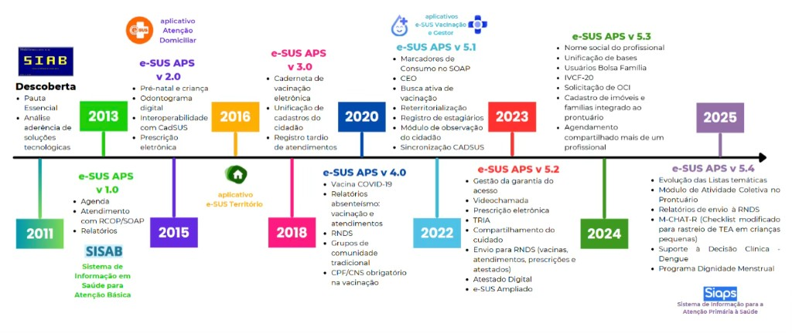

Módulo 3 | Aula 2
Sistemas de Informações de Produção
Sistemas de Informações da Atenção Básica (SIAB/SISAB/e-SUS)
A Atenção Básica (AB) é o nível de atenção mais complexo de ser capturado por um sistema de informação, pois lida com a longitudinalidade do cuidado e com a saúde da população em seu território, e não apenas com a doença ou o procedimento. Por esse motivo, a evolução de seus sistemas de informação é marcada por uma transição do registro de atividades agregadas para a individualização do cuidado. Assim, neste bloco estudaremos a evolução histórica do antigo SIAB para a atual estratégia e-SUS APS.
O primeiro sistema estruturado para a AB foi o SIAB (Sistema de Informação da Atenção Básica), implementado em 1998 nas Unidades Básicas de Saúde (UBS). O SIAB tinha um foco epidemiológico e territorial, sendo baseado no trabalho de campo dos Agentes Comunitários de Saúde (ACS). Ele era alimentado por fichas de papel preenchidas na visita domiciliar e tabuladas posteriormente. Embora tenha sido um avanço, o SIAB era limitado, pois não individualizava o atendimento, dificultando a rastreabilidade do paciente.
Em 2013 foi lançada a estratégia e-SUS Atenção Primária à Saúde (e-SUS APS), que dá seguimento ao processo de informatização qualificada do SUS em busca de um SUS eletrônico (Muzy, 2021). É importante destacar que, entre 2013 e 2018, foram identificados 54 Sistemas Nacionais de Informação em Saúde (SNIS) em funcionamento no Brasil, sendo 21 especificamente nas UBS (Coelho; Andreazza; Chioro, 2021). Isso evidencia a necessidade de estratégias que unifiquem os registros de saúde no país.
Figura 3 - Linha do tempo da estratégia e-SUS APS.

Fonte: Ministério da Saúde (2025).
O SISAB (Sistema de Informação em Saúde para a Atenção Básica) surge em 2013 por intermédio da Portaria GM/MS nº 1.412, de 10 de julho de 2013, como sucessor do SIAB. Ele passou a ser o sistema de informação da Atenção Básica vigente para fins de financiamento e de adesão aos programas e estratégias da Política Nacional de Atenção Básica.
O e-SUS APS marca a transição do registro territorial/agregado para o registro clínico individualizado. Apesar disso, a estratégia de integração ainda não está completa. Apenas 12 dos 31 sistemas foram totalmente integrados. Essa integração foi alta nos sistemas geridos pelo Departamento de Atenção Básica (DAB) que geria o e-SUS, mas baixa nos sistemas de outros departamentos (Coelho; Andreazza; Chioro, 2021).
Importância
Esse sistema monitora a saúde da população em seu território. Diferentemente do SIH e SIA (focados no agravo e no procedimento), o sistema da Atenção Básica foca no cadastro da população, no acompanhamento longitudinal, na prevenção e nas condições crônicas. O SISAB viabiliza a análise da situação sanitária e de saúde territorial mediante a emissão de relatórios e indicadores estratificados por estado, município, região de saúde e equipe. O sistema destaca-se, primordialmente, pela capacidade de individualização dos dados por cidadão (Muzy, 2021).
O acesso a funcionalidades específicas é restrito a gestores municipais e estaduais, mediante autenticação no Sistema de Controle de Uso do e-SUS. Nesse ambiente restrito, o gestor dispõe de ferramentas para monitorar o fluxo de informações, incluindo relatórios de envio de dados por equipe de Atenção Básica, a origem das transmissões por estabelecimento e a tipologia das fichas processadas.
Além de ser um repositório de dados clínicos e administrativos, o SISAB assumiu papel estratégico fundamental para a sustentabilidade da Atenção Primária, uma vez que é o sistema oficial utilizado para fins de financiamento e adesão aos programas da Política Nacional de Atenção Básica (PNAB). É a partir dele que se monitora o desempenho das equipes, o cumprimento de metas de indicadores e a validação dos cadastros que compõem o cálculo da Capitação Ponderada no programa Previne Brasil. Sem o envio correto dos dados para o SISAB, os municípios podem sofrer perdas de receitas financeiras (Junior, 2023; Lopes et al., 2021).
Para além do aspecto financeiro, o sistema apresenta potencial de suma importância para o apoio operacional e gerencial das equipes de saúde. Ele permite a construção de um diagnóstico situacional do território, auxiliando na identificação e priorização de problemas de saúde locais e no planejamento de ações baseadas em evidências. A partir das informações geradas, é possível avaliar a produtividade profissional, analisar demandas específicas de saúde e monitorar atividades de promoção e prevenção, tornando-se uma ferramenta indispensável para a tomada de decisão qualificada na gestão do SUS (Junior, 2023).
Dados coletados
Os dados que alimentam o SISAB são oriundos dos softwares da Estratégia e-SUS APS, como o Prontuário Eletrônico do Cidadão (PEC) e a Coleta de Dados Simplificada (CDS). A coleta abrange uma vasta gama de variáveis, que incluem desde a identificação do cidadão (Ficha de Cadastro Individual) até os registros clínicos e administrativos detalhados, como atendimentos individuais, procedimentos, visitas domiciliares e atividades coletivas.
No escopo da produção assistencial, a partir dos relatórios de saúde, é possível filtrar dados por problema ou condição avaliada (utilizando códigos como a CID-10), tipos de consulta (como pré-natal, puericultura, hipertensão, diabetes), procedimentos realizados (curativos, administração de medicamentos, testes rápidos) e condutas clínicas adotadas. Para atividades coletivas são registrados dados sobre reuniões de equipe, educação em saúde, atendimentos em grupo e mobilização social, permitindo identificar temas abordados e público-alvo.
Usos e disseminação
A disseminação das informações do SISAB ocorre principalmente através do portal do e-Gestor AB e da área de relatórios do próprio sistema, oferecendo acesso tanto público quanto restrito (para gestores cadastrados). Destaca-se que os dados ofertados ao público são restritos.
Saiba mais!
Acesse as tabulações e relatórios disponíveis para explorar as informações disponíveis no SISAB!
Os gestores utilizam essas ferramentas para monitorar o envio da produção, acompanhar o alcance das metas dos indicadores de desempenho e verificar a validação dos cadastros vinculados às equipes. Relatórios específicos, como o de Produção e o de Atividade Coletiva, permitem a extração de tabelas e gráficos refinados por filtros como município, equipe, ciclo de vida e condição de saúde, apoiando a gestão local.
Apesar da riqueza de dados, a literatura aponta que o uso do SISAB ainda está fortemente concentrado no monitoramento do financiamento, havendo subutilização de seu potencial para o planejamento em saúde e gestão clínica (Junior, 2023). Muitos profissionais e gestores acessam o sistema primordialmente para garantir o repasse de recursos, deixando de explorar relatórios que poderiam caracterizar demandas de atendimento, perfil epidemiológico ou avaliar a resolutividade das equipes (Junior, 2023).
No campo acadêmico e científico, o SISAB começa a ser utilizado como fonte de dados para pesquisas que analisam a implementação de políticas públicas, a evolução da informatização da Atenção Básica e o perfil dos usuários cadastrados. Contudo, nota-se ainda uma lacuna na produção científica que utilize essa base de forma mais aprofundada a fim de avaliar as ações de saúde ou a qualidade da atenção prestada (Junior, 2023), isso porque o sistema possui um potencial analítico ainda pouco explorado pela comunidade científica e pelos próprios serviços de saúde.
Qualidade
A qualidade do sistema deu um salto com a exigência do CPF para individualização dos registros. O sistema possui regras de validação que impedem, por exemplo, registrar um pré-natal em paciente do sexo masculino. Outras validações ajudam a garantir a consistência das informações, diminuindo erros de digitação e inconsistências lógicas.
Contudo, a qualidade ainda depende da capacitação dos profissionais (médicos, enfermeiros e agentes comunitários) no uso das ferramentas digitais. A migração de um modelo de registro em papel para um prontuário eletrônico exige treinamento contínuo e adaptação dos fluxos de trabalho na UBS (Junior, 2023). Além disso, a qualidade da informação é heterogênea no território nacional, influenciada pela infraestrutura tecnológica disponível e pela maturidade dos processos de trabalho locais.
Limitações
As principais barreiras são tecnológicas e de infraestrutura. Regiões remotas sofrem com conectividade para transmitir os dados ao barramento nacional, obrigando-se a trabalhar no modo offline do PEC ou no modo CDS, gerando atrasos na alimentação do SISAB.
Uma das principais limitações do SISAB é a fragmentação e a falta de integração completa com outros Sistemas Nacionais de Informação em Saúde (SNIS), especialmente os de vigilância epidemiológica (como SINAN e SIM). Embora o e-SUS AB tenha integrado interfaces de sistemas como o SIAB e o Hiperdia, ainda persiste baixa integração com sistemas geridos por outras secretarias do Ministério da Saúde, o que gera retrabalho para os profissionais e dificulta a integralidade do cuidado e a coordenação da rede. A ausência de dados sobre encaminhamentos e contrarreferência no sistema, por exemplo, impede a avaliação completa da coordenação do cuidado (Coelho; Andreazza; Chioro, 2021).